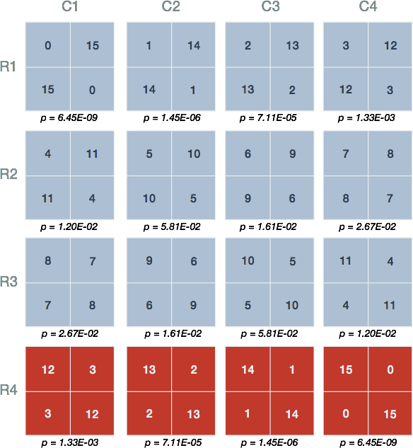

Fisher's Exact Test
- Table of Contents
I. Goals
High-throughput experimental measurements can result in lists of genes that are difficult to interpret at face value. ‘Enrichment analyses’ aim to draw out meaningful, potentially interesting biological themes from the gene-based measurements.
In general, enrichment methods require a collection of candidate sets of genes with shared attributes, for instance membership in a pathway or location on a chromosome. Gene sets are curated in biological databases, most notably the classes described within the Gene Ontology GO (Ashburner 2000). One class of enrichment analysis methods seek to identify those gene sets that share an unusually large number of genes with a list derived from experimental measurements. Below, we describe Fisher’s Exact Test, which is a classic statistical test for determining what ‘unusually large’ might be.
By then end of this primer you will:
- Be familiar with how Fisher’s Exact Test is used to determine enrichment
- Be aware of the meaning of a p-value arising from Fisher’s Exact Test
II. Setup for enrichment analysis
Contingency tables
Data from experiments can often be classified in several ways, for example, by age, gender and treatment response. One may wonder if the proportions within one category are associated with the proportions of another category. In the case where there are two categories of interest the data can be displayed as a 2-by-2 contingency table.
A contingency table shows the distribution of one variable in rows and another in columns, used to study the association between the two variables.
A gene expression study
Suppose we had measured gene expression upon treatment of cells with a drug. We could ask the question: Is there any association between differentially expressed genes and annotations for any given GO term? In other words, are the changes in gene expression enriched for any gene set from GO?
For the purposes of this discussion let us restrict our attention to a single gene set, specifically genes annotated with the GO biological process term ‘DNA-templated transcription, elongation (GO:0006354)’. Table 1 depicts a contingency table corresponding to some highly-simplified experimental results.
Table 1. Contingency table for gene expression data

In this case, the expression of 30 genes has been analyzed: 15 differentially expressed genes were identified and 15 genes were associated with the GO term ‘‘DNA-templated transcription, elongation’. The totals for differential expression and gene set membership are the marginal values, as they lie on the periphery of our 2-by-2 table.
The middle cells contain joint values because they represent genes falling under two categories (Table 1, light blue). Here, 12 genes are both differentially expressed and tagged with ‘translation initiation’. This seems like a large proportion of the marginal differentially expressed gene total (12/15 differentially expressed genes) and our intuition might lead us to the opinion that this is a result worth following up on…
We seemed quite confident that observing 12 differentially expressed genes out of 15 in the gene set seemed like enough evidence to suggest that our drug induced expression changes associated with transcription elongation. However, what would we think if only 9 met both criteria? Furthermore, a more realistic large-scale expression analysis might involved thousands of genes observed rather than just 30. It is clear that we yearn for a way to make our decisions less arbitrary.
III. Fisher’s Exact Test
What are the chances?
Fisher’s exact test is a statistical procedure developed by R. A. Fisher in the mid 1930’s (Fisher 1935). Strictly speaking, the test is used to determine the probabilities of observing the various joint values within a contingency table under two important assumptions:
- The marginal values are fixed
- There is no association between categorical values
These assumptions constitute the ‘null hypothesis’ (): We take the a priori stance that the categories are independent. We simply don’t know the ground truth of whether there exists a relationship between the drug-induced gene expression changes and genes involved in transcription elongation. Consequently, we take our actual contingency table data and calculate the probability that this or any table with more extreme joint values (unobserved) would occur under the null hypothesis. A small probability is interpreted as a discrepancy between the data and the null hypothesis of no association between variables. These calculated probabilities are referred to as ‘p-values’.
Smaller p-values point to an interesting result only if all of the assumptions used to compute the p-value are valid
The possibilities are not endless
Let us return to the gene expression analysis example. Fisher’s Exact Test provides a statistical basis upon which to establish how extreme our particular table of observations are in relation to all possible ones that could have given those same marginal totals given no association between categories. With this in mind, we simply enumerate the different joint values that are possible for the same marginal totals (Figure 1).
Figure 1. Possible joint values of the contingency table. The 16 possible joint values with the condition that the row and column sums remain fixed. The labels and marginal totals are identical to Table 1 but left out for clarity. The tables are arranged by increasing value of the top left quadrant, representing differentially expressed genes and those within the gene set.
Let us count the ways
There may exist 16 possible arrangements of joint values for fixed marginal totals, however, this does not imply that each is equally likely. To see why, consider the arrangement in the first row and second column of (Figure 1; R1-C2): This arrangement is reproduced in Table 2 and shows 1 differentially expressed gene that is a member of the gene set. To calculate the probability of this (unobserved) arrangement under the null hypothesis, we will make use of the rules for combinations.
Table 2. Contingency table for arrangement R1-C2

R.A. Fisher’s insight was to leverage the rules for enumerating combinations to derive an exact probability for any given contingency table under the null hypothesis. Looking back at Table I, we must first calculate the ways that each of the joint values could have arisen simply by randomly selecting genes. We illustrate the process for the arrangement in Table 2 and the process proceeds by calculating three values, one for each row:
- Ways to select 1 differentially expressed gene without replacement out of 15 tagged IN the gene set
- Ways to select 14 differentially expressed genes without replacement from 15 tagged NOT IN the gene set
- Ways to select 15 differentially expressed genes without replacement from 30 total genes
These three values are sufficient to calculate the probability of any particular contingency table. The first number represents the ways 1 differentially expressed gene can be selected from 15 possible ‘IN Transcription elongation’ (Figure 2, top left). In statistical jargon, this is described as ‘15 choose 1’. There are exactly 15 ways this can be done: One for each of the 15 genes with the tag.
Similarly, there are ‘15 choose 14’ or 15 ways that 14 differentially expressed genes can be selected from 15 ‘NOT IN Transcription elongation’. To see this, consider the 15 genes labeled 16 through 30 in the top right group of Figure 2. We can choose 14 genes by selecting those labelled 16 through 29. Alternatively, one can also select 16 through 28 then 30 and so on. The third number ‘30 Choose 15’ is precisely 155 117 520.
Figure 2. Calculations underlying the probability of a contingency table. The three groups correspond to the marginal totals for each row in Table 2. A contingency table's total probability is defined by the three probabilities of choosing differentially expressed genes from each group: 1 differentially expressed gene from 'IN Transcription elongation'; 14 from 'NOT IN Transcription elongation'; and 15 differentially expressed genes from the 30 total genes.
The probability of observing this arrangement then is given by the quotient:
Some of you may recognize the expression on the left as the probability function for the hypergeometric distribution.
What are the probabilities?
At this point we have the basic building blocks to describe Fisher’s Exact Test. Fisher’s Exact Test amounts to summing the probability of observing our table of observed joint values in addition to those more extreme than our table. The possible tables and their respective probabilities are displayed in red Figure 3.

Figure 3. Probabilities of the various contingency table joint values. Shown are the 16 possible arrangements of joint values with the condition that the row and column sums remain fixed. Underneath each is the probability (p) calculated using the probability function of the hypergeometric distribution. The red tables represent those having joint values equal to or more extreme than 12 genes both differentially expressed and tagged with 'IN Translation Initiation'.
One-Sided tests
Figure 3 shows that our observed result in Table 1 has a probability equal to 1.33E-03 (Figure 3, R4-C1). The one-sided test requires us to sum the probabilities of the observed table and those unobserved tables which possess more than 12 genes the are differentially expressed (DE) and IN the gene set (Figure 3, red)
From this result, we claim that the probability of our observed data or that more extreme under the assumption that there is no association between expression and gene set membership is 0.0014. Whether this represents an interesting discrepancy from the null hypothesis, an experiment worth repeating, or an ‘enrichment’ of genes in the set amongst differentially expressed genes is left up to the researcher’s interest and expertise.
Two-Sided tests
We have not yet considered the possibility that differentially expressed genes may contain fewer members of the gene set than would be expected if genes were sampled randomly, that is, differentially expressed genes are underrepresented for ‘IN Transcription elongation’. The two-sided Fisher’s Exact Test accounts for both enrichment and depletion. Although there are several flavours of the test (Rivals 2006), we demonstrate an approach whereby the tables with probabilities smaller than our observed data are summed
This result is just under double the one-sided p-value, resulting from an ‘uneven’ distribution of p-values about the mean. Once again, whether this represents a valuable discrepancy from the null hypothesis and an observation worth following up on is left up to the discretion of the researcher.
IV. Calculations in R
The R project for statistical computing is popular software within the bioinformatics community because of it’s wide support and many helpful packages that facilitate common analyses. We can easily perform the calculations described above using the built-in stat package which have functions for the Hypergeometric distribution:
Hypergeometric {stats} R Documentation
# The Hypergeometric Distribution
## Description
Density, distribution function, quantile function and random generation for the hypergeometric distribution.
## Usage
dhyper(x, m, n, k, log = FALSE)
phyper(q, m, n, k, lower.tail = TRUE, log.p = FALSE)
qhyper(p, m, n, k, lower.tail = TRUE, log.p = FALSE)
rhyper(nn, m, n, k)
## Arguments
x, q
vector of quantiles representing the number of white balls drawn without replacement from an urn which contains both black and white balls.
m
the number of white balls in the urn.
n
the number of black balls in the urn.
k
the number of balls drawn from the urn.
...
It may not be obvious how to translate the description of arguments for the Hypergeometric density function dhyper to our particular case. Table 3 below summarizes what these mean in terms of our contingency table.
Table 3. Arguments for the R stat package function dhyper
With this knowledge in hand, it is trivial to reproduce the p-values described previously.
# Initialize variables
m <- 15 # Genes IN GO term
n <- 15 # Genes NOT IN GO term
k <- 15 # Gene hits, that is, differentially expressed
x <- c(0:15) # Genes both IN GO term and differentially expressed 'hits'
# Use the dhyper built-in function for hypergeometric density
probabilities <- dhyper(x, m, n, k, log = FALSE)
probabilities## [1] 6.446725e-09 1.450513e-06 7.107514e-05 1.334633e-03 1.201170e-02
## [6] 5.813662e-02 1.614906e-01 2.669539e-01 2.669539e-01 1.614906e-01
## [11] 5.813662e-02 1.201170e-02 1.334633e-03 7.107514e-05 1.450513e-06
## [16] 6.446725e-09According to Figure 3, our one-sided p-value is the sum of the probabilities of a result at least as extreme as that observed, given the null hypothesis.
# Calculate the one-sided p-value for 12 or more genes both DE and IN GO term.
pvalue <- sum(probabilities[13:16])
pvalue## [1] 0.001407165Let’s plot the results, with our extreme values included in the p-value highlighted in red.
# Bar plot
library(ggplot2)
data <- data.frame( x = x, y = probabilities )
ggplot(data, aes(x=factor(x), y=y)) +
theme(axis.text=element_text(size=14),
axis.title=element_text(size=18,face="bold"),
axis.title.x=element_text(margin=margin(20,0,0,0)),
axis.title.y=element_text(margin=margin(0,20,0,0))
) +
geom_bar(stat="identity", fill=ifelse(data$x < 12,
rgb(52, 73, 94, maxColorValue=255),
rgb(231, 76, 60, maxColorValue=255)),
colour="black") +
labs(x = "DE genes IN GO term", y = "Probability")
V. Caveats
There has been much discussion with regards to the assumptions, limitations, and overall relevance of this class of procedures (Khatri 2005, Goeman 2007). We leave these more nuanced discussions for the reader to follow.
References
- Ashburner M. et al. Gene ontology: tool for the unification of biology. The Gene Ontology Consortium. Nature Genetics v25 pp. 22-29, 2000.
- Fisher, R. A. The logic of inductive inference. J. Roy. Statist. Soc. 98, pp. 39-82, 1935.
- Greenland S. et al. Statistical tests, P values, confidence intervals, and power: a guide to misinterpretations. European Journal of Epidemiology, v31(4) pp. 337-350, 2016.
- Goeman et al. Analyzing gene expression data in terms of gene sets: methodological issues. Bioinformatics v23(8) pp. 980-987, 2007.
- Khatri P et al. Ontological analysis of gene expression data: current tools, limitations, and open problems. Bioinformatics v21(18) pp. 3587-3595, 2005.
- Khatri P et al. Ten years of pathway analysis: current approaches and outstanding challenges. PLoS Comp. Bio. v8(2) e1002375, 2012.
- Rivals et al. Enrichment or depletion of a GO category within a class of genes: which test? Bioinformatics v23(4) pp. 401-407, 2006.